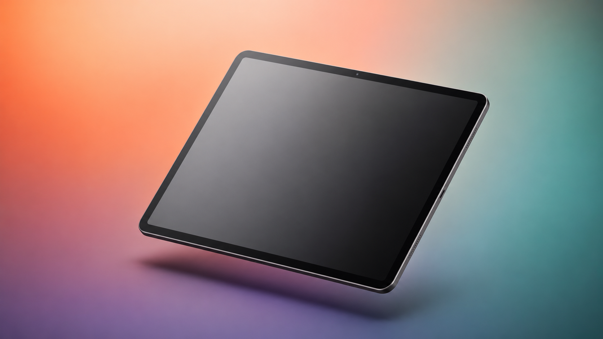

레벨테스트는 실력을 알려주지만, 성향은 알려주지 않습니다.
PRISM은 학생 한 명 한 명의 학습 성향을 데이터로 진단해
상담과 수업 설계를 바꿔드립니다.
WHY PRISM
교사는 직감으로 알고 있지만, 근거로 설명하기 어려웠던 것들. PRISM은 그 직감에 데이터를 더합니다.
HOW IT WORKS
빛이 프리즘을 지나 여러 색으로 나뉘듯,
학생의 영어 학습을 입력·출력·동력 세 층으로 분해해 고유한 프로파일을 만듭니다.
영어를 받아들이는 경로가 학생마다 다릅니다. 소리·글자·상황 세 경로의 강도를 측정해 가장 효율적인 학습 진입점을 찾습니다.
듣기와 읽기를 함께 쓰는 균형형
일단 말하는 학생, 정확히 말하는 학생, 새로운 표현에 도전하는 학생. 표현 성향에 따라 수업 설계가 완전히 달라집니다.
자신감, 회복력, 소통 욕구, 무대 에너지. 같은 유형이라도 이 네 가지가 다르면 필요한 케어가 완전히 다릅니다.
PRISM의 문항과 3-Layer 모델은 임의로 만든 것이 아닙니다. 제2언어 학습유형·학습전략 분야에서 가장 널리 인용되어 온 두 축의 연구를 이론적 토대로 삼아, 초등 영어 학습자에 맞게 재구성했습니다.
학습자가 언어를 어떤 감각 통로로 받아들이는지(듣기·읽기·체험 등)에 따라 학습 성향이 갈린다는 것을 대규모로 밝힌 고전 연구입니다. 이후 전 세계 학습유형 연구의 출발점이 되었습니다.
학습자가 언어를 어떻게 다루고 스스로를 조절하는지(인지·상위인지·정의적·사회적 전략 등)를 체계화한 대표 저서입니다. 학습의 '방식'과 '동기'를 구조로 설명한 기준점입니다.
PRISM은 이 두 프레임워크를 초등 영어 학습 맥락에 맞게 재해석·확장한 진단입니다. 여기에 응답의 일관성과 속도를 분석하는 자체 신뢰도 검증 장치를 더해, 결과의 안정성을 높였습니다.

DUAL REPORT
학부모에게는 이해를, 교사에게는 전략을. 같은 데이터를 두 관점으로 전달합니다.
레이더 차트 + 유형 이름 + 가정 가이드. "우리 아이가 이렇게 배우는군요"를 한 장에.
수업 전략·활동 레시피 + 이탈 가능성 참고 + 상담 요약. 내일 수업부터 바로.
아이가 문항을 대충 넘기면, 어떤 검사든 결과가 왜곡됩니다. PRISM은 응답의 일관성과 속도를 실시간으로 분석해, 신뢰할 수 없는 응답을 자동으로 걸러냅니다. 일반 학습유형 검사에는 없는 검증 장치입니다.
같은 특성을 표현만 바꿔 여러 번 질문하고, 선택지 순서까지 뒤집어 배치합니다. 답이 서로 엇갈리면 신뢰도 신호로 잡아냅니다.
문항마다 걸린 시간을 기록해, 읽지 않고 넘긴 듯한 비정상적으로 빠른 응답을 감지합니다. 엇갈림과 겹치면 신뢰도를 낮춥니다.
같은 영어인데 왜 집에서 자꾸 부딪힐까요? 대부분 부모의 도움 방식과 아이의 학습 방식이 달라서 생기는 일입니다. PRISM은 검사 결과에서 한 발 더 — 부모님도 1분만 답하면, 어디가 맞고 어디가 어긋나는지 바로 알려드립니다.
아이는 소리로 배우는데 단어장으로 도와주고 있진 않은지, 아이는 일단 말하고 싶은데 자꾸 고쳐주고 있진 않은지. 어긋나는 지점과 해법을 구체적으로 알려드려요.
부모의 반응이 아이의 자신감과 회복력을 키우기도, 깎기도 합니다. 지금 대처가 아이의 학습 동력에 어떻게 작용하는지 짚어드리고, 무엇을 바꾸면 좋을지 안내해요.
아이의 PRISM 검사가 끝나면, 결과지의 링크 또는 QR을 통해 부모님 검사를 바로 시작할 수 있어요.
부모님 문항 11개, 약 1분. 레벨이나 콘텐츠가 아닌 대하는 방식과 태도에 대한 리포트입니다.
다른 영어 검사에는 없는, PRISM만의 기능입니다.
학생 검사 하나에서 세 가지 산출물이 자동 생성됩니다.
학부모 전달용, 학원 내부용, 부모 참여형까지.
월 구독료 없이, 검사 인원 수에 따라 과금됩니다.
※ 가격은 부가세 별도입니다. 도입 문의 시 무료 시범 검사를 제공합니다.